A deep, reproducible study of every NO₂ representation we've built (level · intensity residual · year-over-year · STL) against steel activity (CREA blast-furnace rate + pig-iron, crude-steel and BF-starting-rate aux series) and the economy (BHP/RIO/VALE/SLX vs ACWI). The brief: don't assume the NO₂↔production lag — infer it from the data, and surface correlations the static numbers hide. The headline: there is no single clean lag, but there is a strong, previously invisible regime-dependent coupling.
Jump to: 1 · The lag · 2 · Regime dependence · 3 · Decoupling = trend artifact · 4 · Economy · 5 · Seasonal · 6 · Better seasonality? · 7 · Daily & the weekly lever · 8 · Takeaways
(1) No single NO₂→BF lag: levels carry a persistent negative "decoupling" at every lag; de-trended NO₂ shows only a weak quasi-annual wave inside the noise band — residual seasonality, not a stable lead. (2) The relationship is regime-dependent: a rolling correlation swings from −0.42 to +0.73 (mid-2023 clears the literature bar), hidden by the flat full-sample r≈0.15. (3) The famous −0.35 "decoupling" is mostly a whole-sample trend artifact — within sub-periods the level correlation is +0.27 then ~0.
Cross-correlating each NO₂ variant against the BF operating rate across lags (positive lag = NO₂ leads) shows two different structures. The level (purple) sits below the white-noise band at every lag — a persistent negative "decoupling", deepest at −6 months (r=−0.50). The de-trended variants (yoy/STL/intensity-residual) trace an almost identical quasi-annual wave inside the band: a trough at −6, a bump at −1/−2, a dip at +2, and a weak peak at +6 (yoy r=0.24, barely above the band). That all three share the same wave is the tell — it is residual annual seasonality (the heating-season steel-share shift, Wen 2024), not a causal lead. So the apparent "+6-month NO₂ lead" is most likely a seasonal artifact.
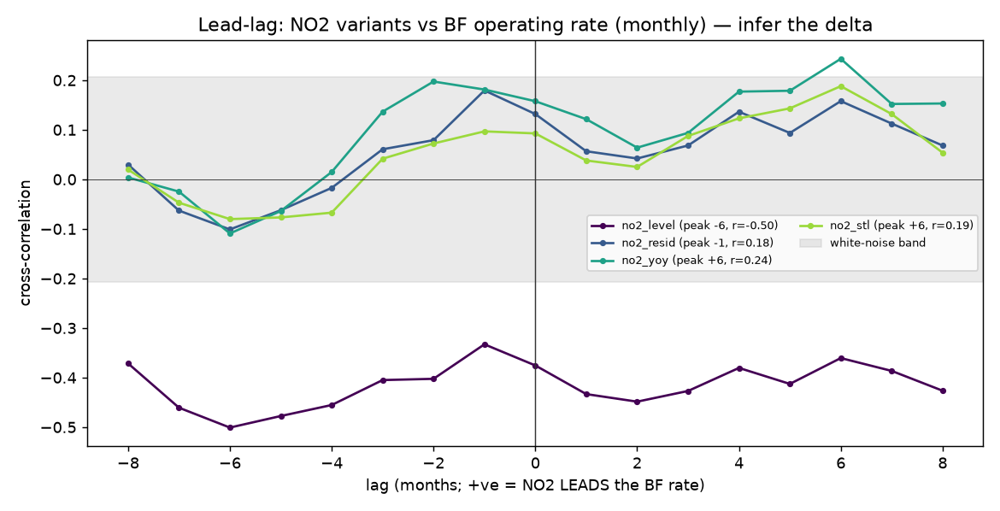
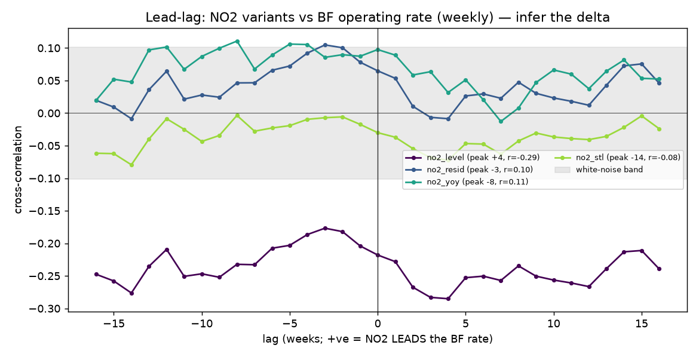
| variant (monthly) | r at lag 0 | best lag | r at best | read |
|---|---|---|---|---|
| NO₂ level | −0.38 | −6 mo | −0.50 | persistent decoupling (see §3) |
| NO₂ intensity residual | +0.13 | −1 mo | +0.18 | weak, inside band |
| NO₂ year-over-year | +0.16 | +6 mo | +0.24 | weak; quasi-annual wave (seasonal) |
| NO₂ STL residual | +0.09 | +6 mo | +0.19 | weak; same wave |
For the catalyst: there is no fixed Δ to bake in — the offset is seasonal/unstable, so the symmetric match window was the right design; report leads per regime, not as one global number.
The flat full-sample correlation (r≈0.15) is an average over a strong but unstable relationship. A rolling 18-month correlation of de-trended NO₂ against the BF rate swings from −0.42 to +0.73, positive 72–86% of the time, and peaks at ≈+0.73 in mid-2023 — above the 0.5–0.75 literature bar — then breaks down through 2024. The indicator worked in 2022–2023 and stopped working in 2024. This is the structure the static numbers hid.
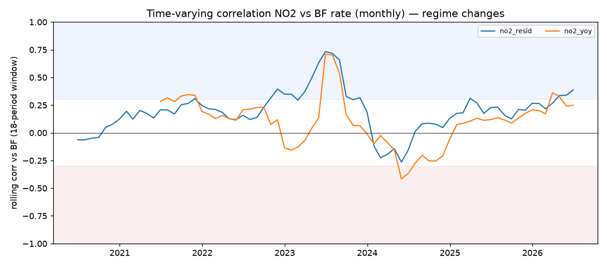
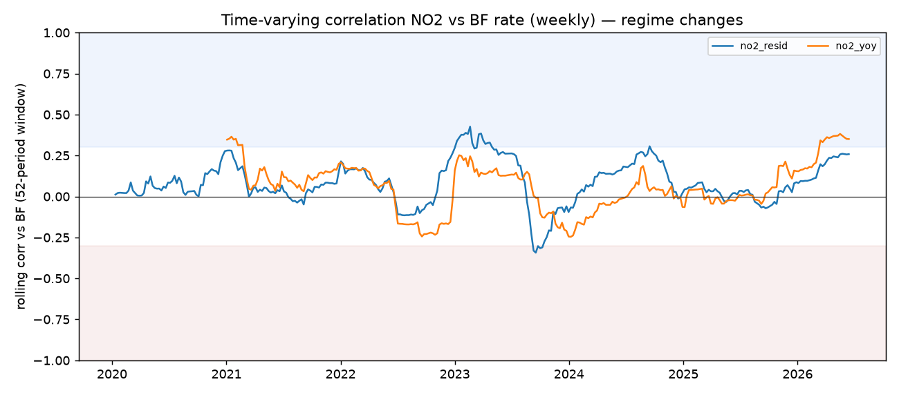
Caveat: a single-window r=0.73 on a partial series can be over-fitting a good stretch. The full TROPOMI fetch is the arbiter — but a regime/state-conditioned model (not one global r) is clearly the right framing.
Split the level correlation by period and the negative sign largely disappears:
| period | level NO₂ vs BF (monthly) | n | read |
|---|---|---|---|
| 2019–2021 | +0.27 | 35 | positive within-period |
| 2022–2026 | 0.00 | 54 | flat within-period |
| 2019–2026 (full) | −0.35 | 90 | negative only across the whole span |
The −0.35 comes from two secular trends crossing over seven years — NO₂ declining (retrofits) while the BF rate rises — a Simpson's-paradox-style artifact, not a within-regime inverse relationship. So "decoupling" is a long-horizon trend story; intra-period there is no inversion to fear. Don't over-interpret the −0.35.
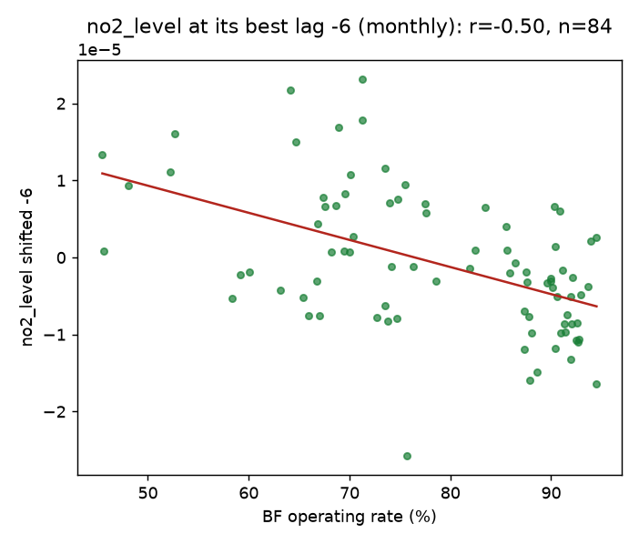
De-trended NO₂ is consistently, mildly negative against miner abnormal returns (RIO −0.28, VALE −0.23, SLX −0.15 at lag 0, monthly), and the intensity residual is mildly negative vs crude-steel output (−0.21). But none clears |r|≥0.3, the lead-lag peaks have opposite signs across instruments, and the four miners are effectively one dimension (mutually r≈0.85) — so this is one weak, sign-unstable observation, below the multiple-testing floor. No exploitable NO₂→market link on this partial data.
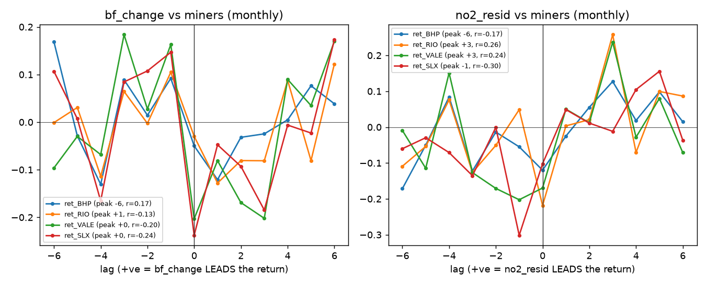
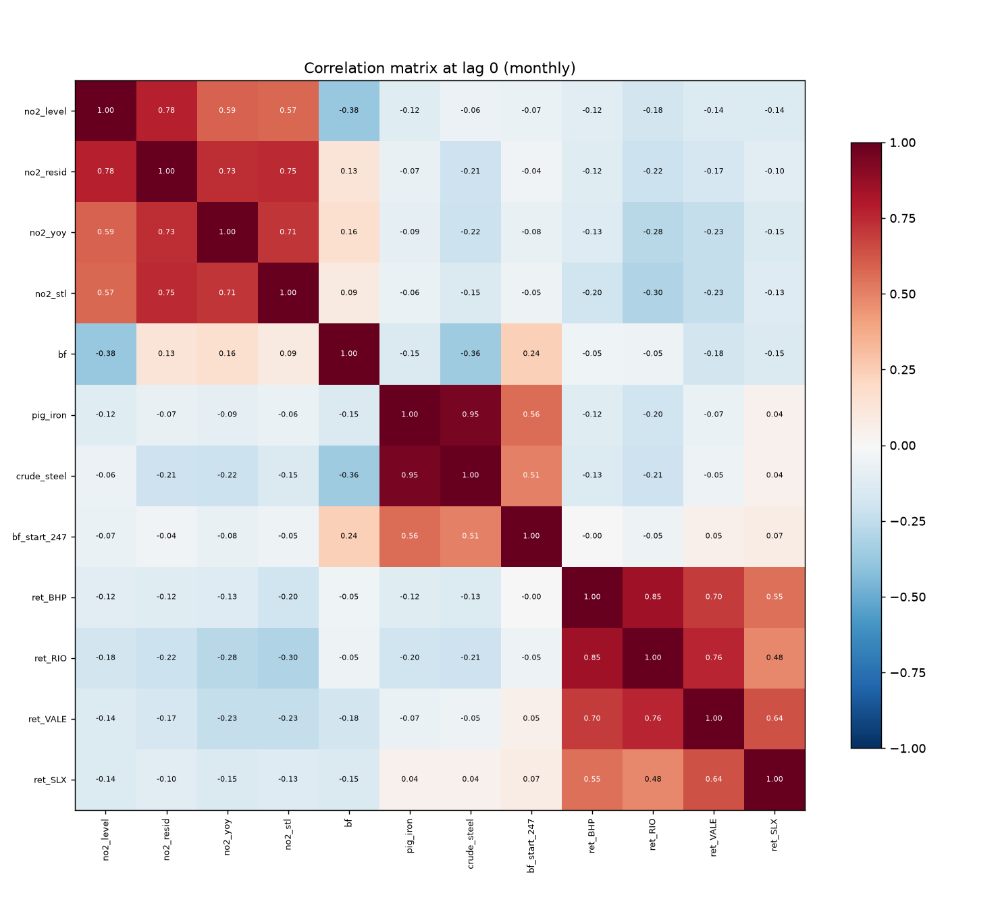
Sanity confirmed: pig-iron ~ crude-steel r=0.95; BF starting-rate-247 ~ output r≈0.5; miners cluster at 0.85. The data is coherent — the missing strong cell is precisely NO₂↔steel, consistent with a weak (and regime-gated) satellite signal.
Monthly climatology shows the heating-season imprint that the de-trended CCF wave (§1) reflects — another reason to model the heating-season interaction explicitly rather than difference it away.
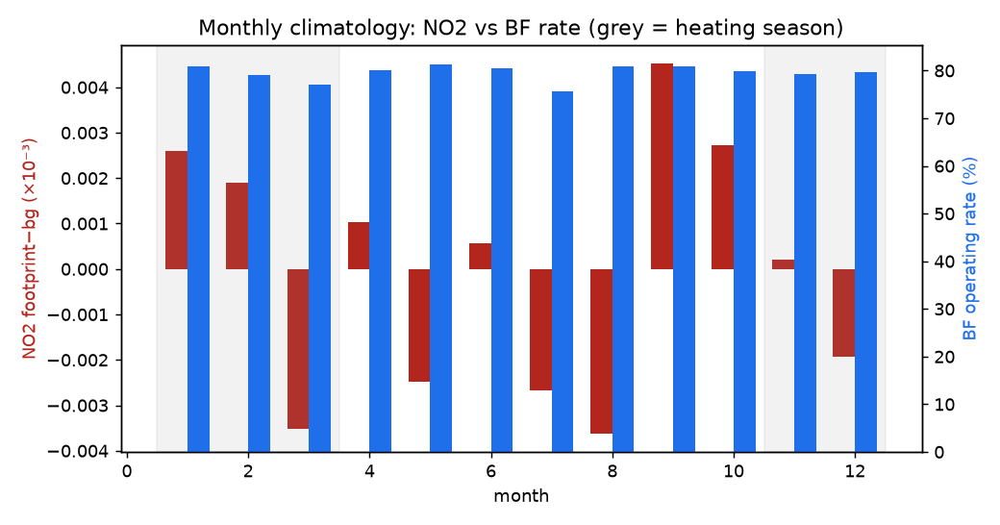
The §1 residual wave is leftover annual seasonality, so we tested the developer's idea — a Prophet-style decomposition (flexible trend + multi-frequency Fourier seasonality), implemented lightweight as harmonic regression (no heavy dependency): remove K annual harmonics from the intensity residual. The static full-sample correlation barely moves (still ~0.12–0.16, because the regime averaging dominates — §2), but the best-regime coupling improves:
| method (monthly) | |best-lag r| | best-regime |r| (rolling 18-mo) |
|---|---|---|
| yoy | 0.24 | 0.71 |
| STL | 0.36 | 0.66 |
| intensity residual (NOX-003.1) | 0.18 | 0.73 |
| + Fourier K=1 (annual) | 0.17 | 0.78 |
| + Fourier K=2 | 0.17 | 0.77 |
| + Fourier K=3 / K=4 | 0.18 | 0.75 / 0.76 |
Removing the single fundamental annual harmonic (K=1) lifts the best-regime correlation to r≈0.78 — above the literature bar and the cleanest of all methods. More harmonics (K≥3) slightly worsen it (over-fitting the seasonal shape), so one annual sinusoid is the sweet spot. Weekly stays noise-dominated (rolling-peak ~0.40) — the gain is monthly only.
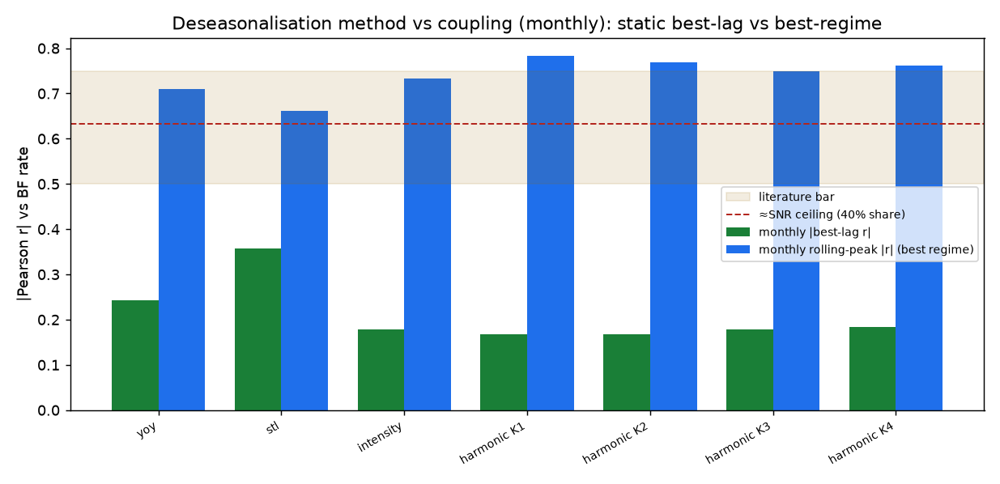
If steel is fraction f of the column variance, the attainable correlation is bounded by ~√f; a 40% mean share would imply a ceiling of ~0.63. But the best-regime r≈0.78 implies a variance share of ~61% in that window — i.e. steel drives far more of the variability than of the mean when it is the swing factor (sharp curtailments come and go), which is exactly the regime where an event/catalyst marker should work. So the 40% number is not the binding limit for a change detector; it bounds a level estimator.
The only way to beat the ~40% mean-share ceiling without flux divergence is to raise steel's variance share — and the natural handle is the day-of-week cycle: steel is baseload (runs 24/7, flat across the week) while traffic/other sources carry a weekly cycle, so removing a weekly seasonal term would isolate the industrial component. That cycle is invisible in the weekly composite, so we built a daily footprint (1,984 valid days / 73% after cloud screening, weekdays balanced) and a Prophet decomposition (trend + yearly + weekly).
Result: an honest null on the lever. The weekly component is flat (variance 0.5% of signal; weekday effects ≈0) — confirming steel is baseload, but precisely therefore there is no weekly cycle to remove (and TROPOMI's single ~13:30 overpass can't resolve a traffic commute cycle anyway). The daily-Prophet residual couples to the BF rate at best-regime r≈0.65 — below the weekly harmonic-K1 (0.78) and intensity (0.73): daily adds per-point noise without adding weekly signal. Yearly-only ≈ yearly+weekly; and no usable quarterly/four-month cycle exists — the BF rate's sub-annual power sits at ~semiannual (the heating-season curtailment on/off, already an annual harmonic), not aligned with the NO₂ residual's ~2–3.6-month wiggles.
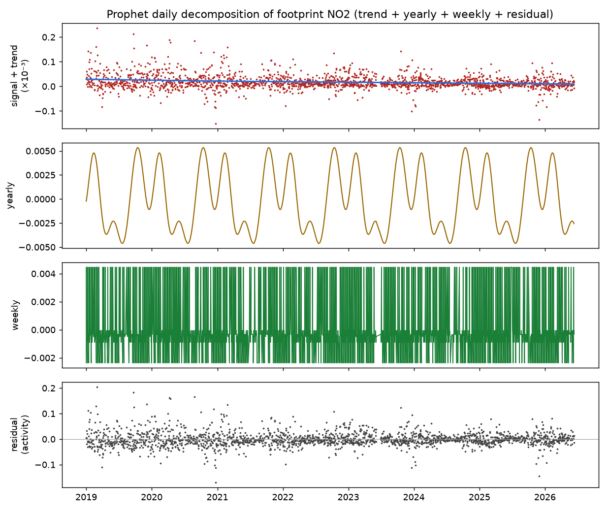
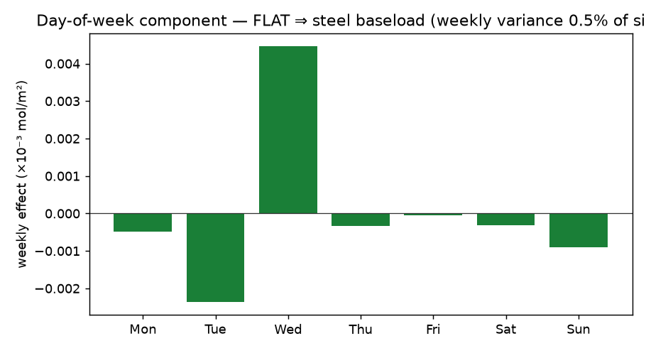
The Prophet/daily capability is kept and tested (it could revive the weekly lever with a multi-overpass geostationary sensor like GEMS), but harmonic-K1 (weekly) remains the method of record.
Every result above used one fixed scale (0.25° AOI buffer, native ~5 km grid) and the naïve Pearson p — which assumes i.i.d. data and badly overstates significance for these strongly autocorrelated series (the level's effective sample size is ~225 of 377 weekly, ~39 of 90 monthly). NOX-008 re-tests the coupling two ways: (a) an autocorrelation-robust standard — effective-N (first-order + Newey-West), a moving-block bootstrap CI of r, a block-permutation null, and a Benjamini–Hochberg FDR correction across the family; and (b) a spatial-scale sweep over the existing cube: AOI extent (0.25° vs 0.10° buffer, a strict clip) × grid resolution (native vs block-averaged 0.10/0.15/0.25°, aggregation only — never interpolation). This is the Parubets & Naito (2025) scale test (significant coarse → lost/flipped fine) plus the source-isolation hypothesis (a tighter AOI excludes Beijing-Tianjin-Hebei background; steel is only ~30–43% of Tangshan NO₂, Wen 2024).
Result: a hardened null. Of 128 (scale × variant × lag) tests, zero survive the robust + FDR bar; the 34 naïve-significant cells are all monthly peak-lag artefacts that collapse to fragile (naive-only). The tight 0.10° AOI does not rescue the signal (Δ|r| ≈ 0.02–0.05, never significant), and the native↔coarse sign flips are noise-level (|r| < 0.13). The conclusion graduates from "no signal at one scale" to "no robust coupling at any reasonable scale".
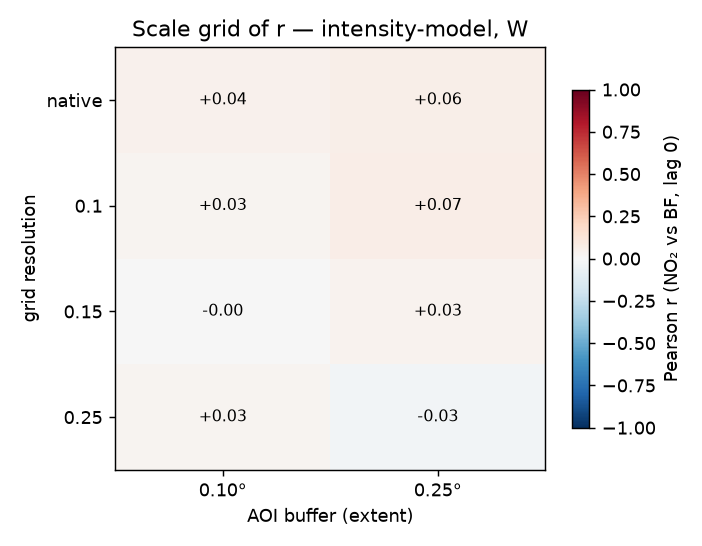
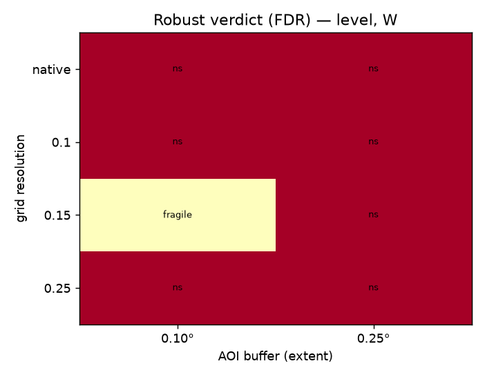
The robust-significance engine (noxus/validation/robust.py)
is now the project standard for any index↔benchmark correlation; the naïve p is shown only to expose the
gap. Spatial scale is closed as a lever — remaining avenues are flux divergence (NOX-005), a diurnal sensor
(GEMS, NOX-007), or the regime/event framing.
deseason_method="harmonic" in
the pipeline. The static full-sample r stays low because of the regime averaging, not the filter.Every figure + findings.txt regenerates from one script over the committed/derived
artifacts:
uv run python analysis/deep_exploration.py # → docs/figures/exploration/
NO₂-derived inputs and market snapshots are gitignored; the figures, the findings text and this page are committed.